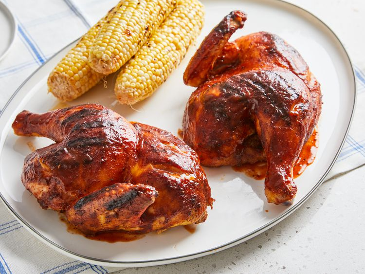

Home
Barbeque Chicken

Description
When it comes to grilled barbecue chicken, everyone wants a nice thick barbecue glaze attached to the skin, and the only way to do it is to brush it on as it cooks. But because barbecue sauce has such a high sugar content, it only takes a minute for it to go from brick red to solid black — so you have to be careful! To ensure a sticky, sweet glaze that's not burnt, I sear the skin quickly, then cook it skin-side up on a covered grill, brushing on the glaze while it cooks. Because the glaze never touches the grilling surface, it doesn't burn.
Ingredients
- 1 whole chicken, cut into halves
- ¼ cup rice vinegar.
- 2 tablespoons barbecue sauce.
- 2 cloves garlic, crushed.
- 1 tablespoon salt.
- 1 teaspoon ground black pepper.
- 1 teaspoon paprika.
- 1 teaspoon onion powder.
- ½ teaspoon cayenne pepper.
- ½ cup barbecue sauce, or as needed.
Steps
- Cut 1/2-inch deep slashes in the skin-side of each chicken half: two cuts in each breast, two in each thigh, and one in each leg. Remove wing tips.
- Whisk vinegar, 2 tablespoons barbecue sauce, and garlic together in a large bowl. Place chicken in the bowl and turn to coat. Arrange chicken halves in the bottom of the bowl with the cut sides down; cover with plastic wrap and refrigerate for 1 hour.
- Preheat an outdoor grill for medium-high heat and lightly oil the grate.
- Remove chicken from the bowl and pat dry with paper towels; discard any remaining marinade. Place chicken halves, skin-side up, on a plate and season with salt, pepper, paprika, onion powder, and cayenne pepper.
- Cook chicken, skin-side down, on the preheated grill until grill marks appear, 3 to 4 minutes. Turn chicken over, close the grill lid, and cook, basting with remaining barbecue sauce every 6 minutes, until no longer pink at the bone and the juices run clear, about 35 minutes. An instant-read thermometer inserted into the thickest part of the thigh, near the bone should read 165 degrees F (74 degrees C).